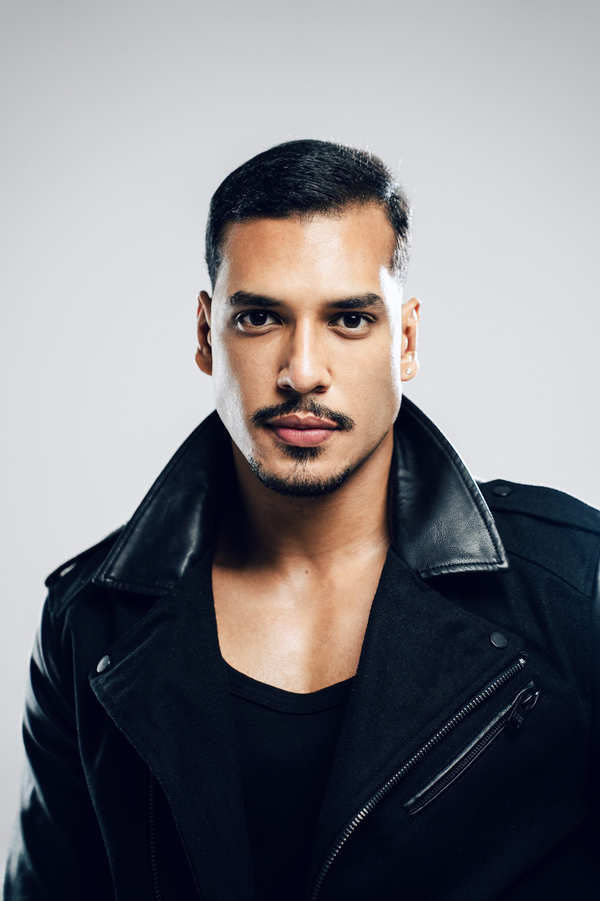
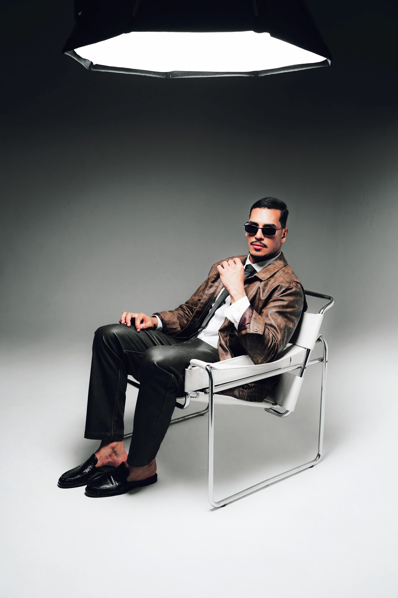
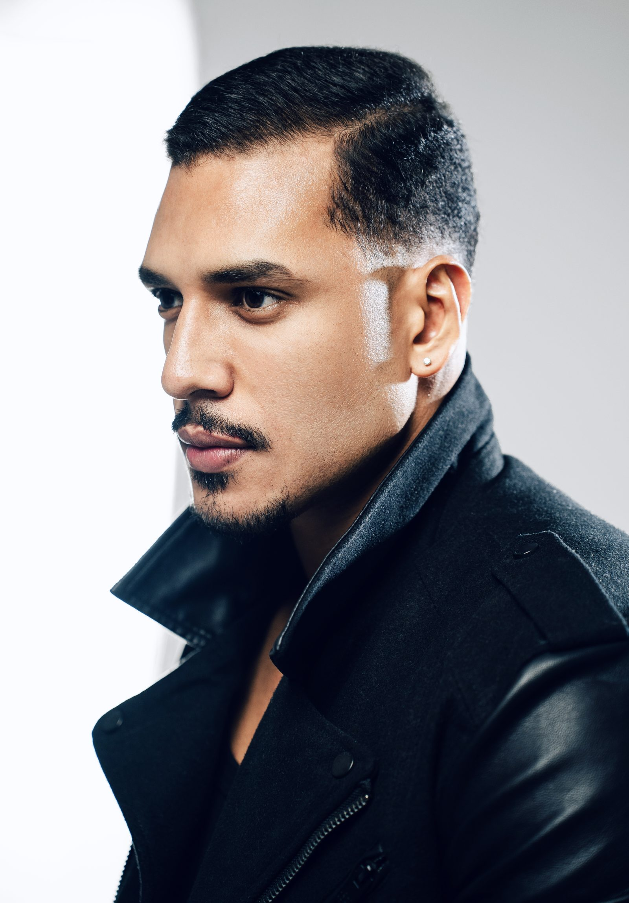
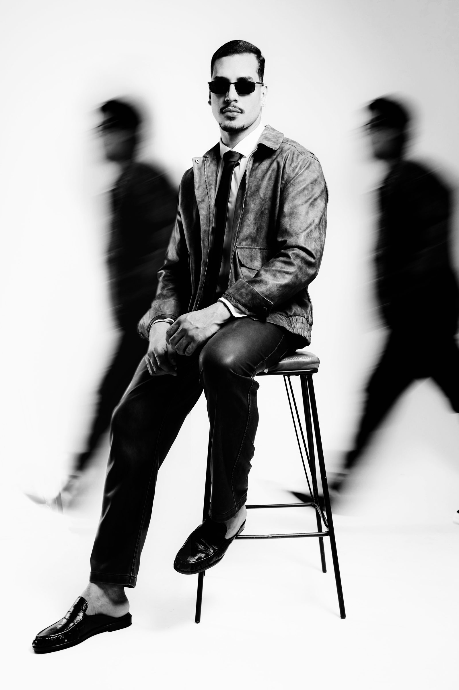
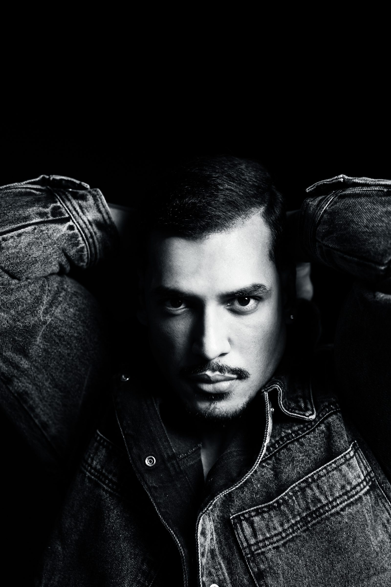
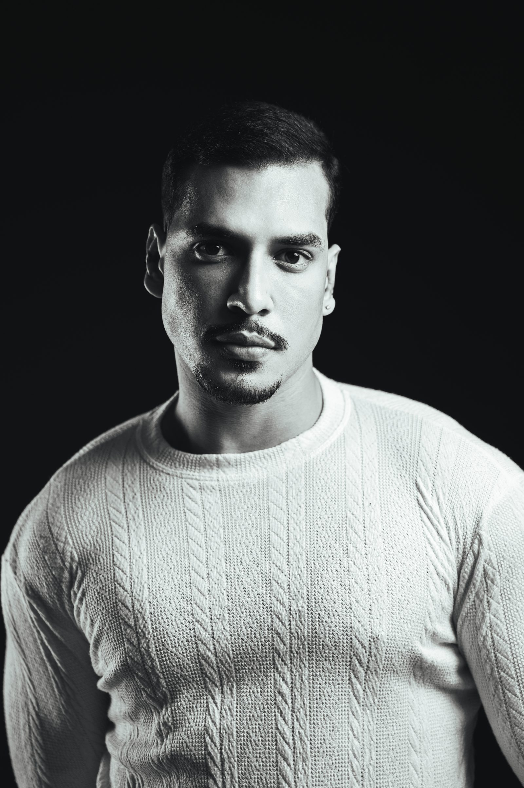
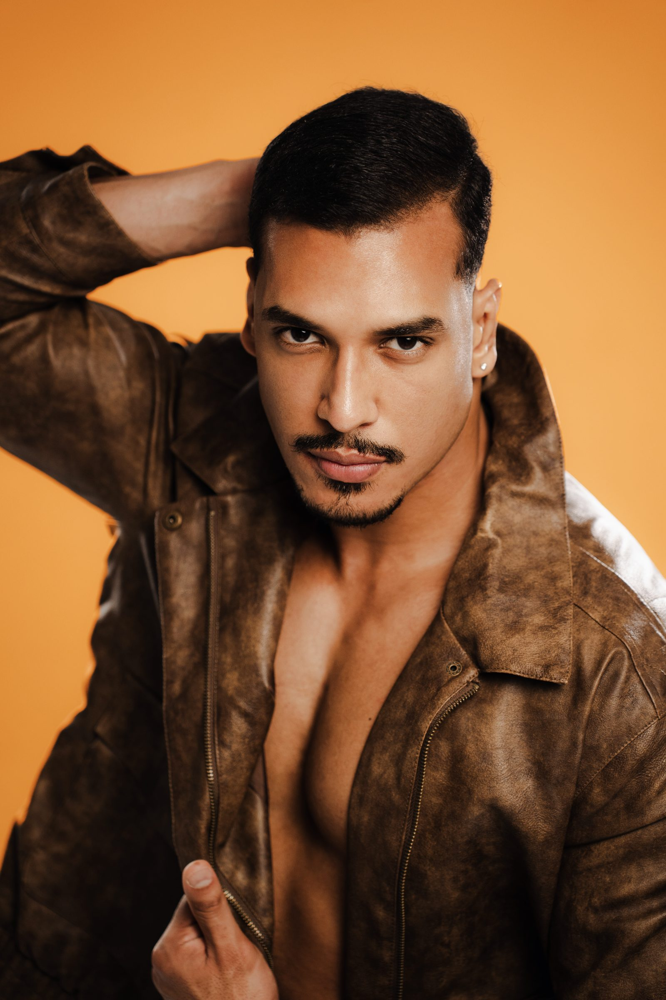
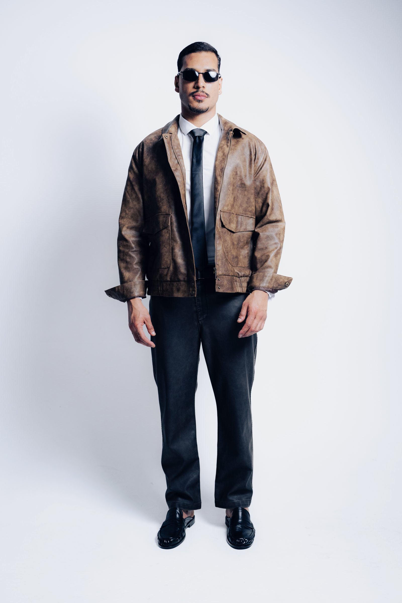
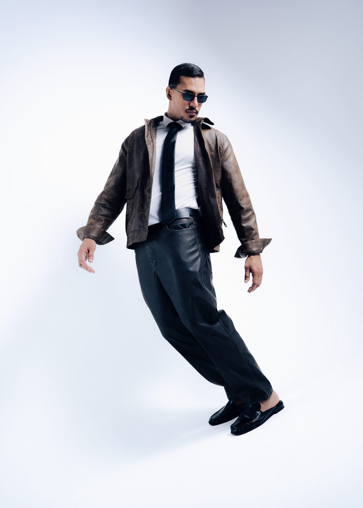
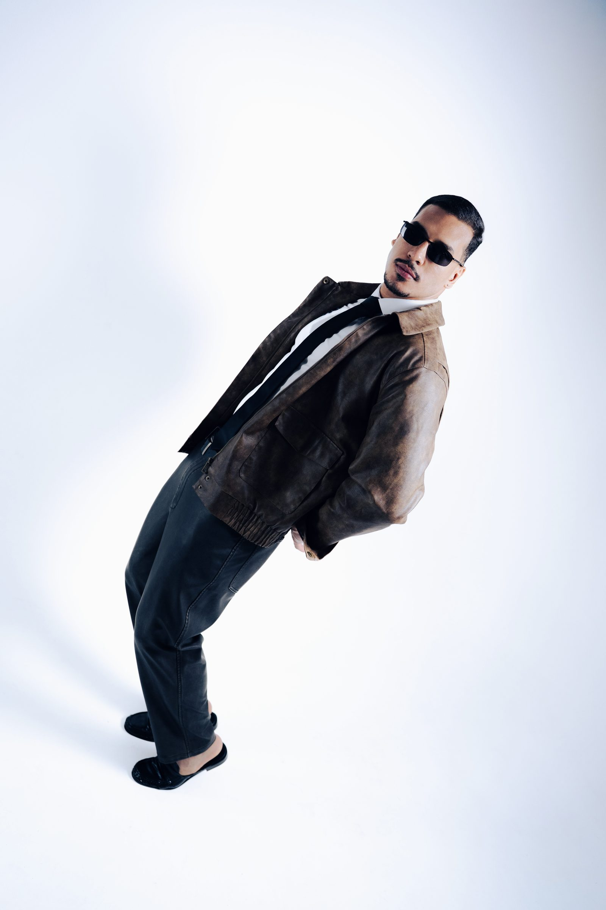

Weslley Monteiro
Modelo e artista
Estratégia · Criatividade · Conteúdo
Atuação em todo o Brasil Todo o Brasil
79,4 mil
Seguidores no Instagram
Criatividade que conecta marcas e pessoas.
Estratégia, criatividade e conteúdo para construir conexões reais entre marcas e pessoas.

Sobre mim
[Frase de apresentação: quem é o Weslley como modelo e artista, e o que ele leva para as marcas parceiras.]


Biografia: [trajetória profissional, formação e o que motiva o trabalho como modelo e artista. Texto a ser enviado pelo cliente.]
Experiência. [Tempo de mercado, tipos de projeto já realizados e formatos de trabalho com marcas.]
- Medidas
-
- Altura
- 1.87m
- Tórax
- 00
- Cintura
- 44
- Manequim
- G
- Calçado
- 44
- Especialidades
- [Especialidade 1] · [Especialidade 2] · [Especialidade 3]
- Diferenciais
- [Diferenciais do trabalho, a definir com o cliente.]
- Com marcas
- [Como funciona a parceria com marcas, do primeiro contato à entrega.]
Ensaio fotográfico







Em números
- Seguidores no Instagram
- 79,4 mil
- Alcance médio mensal
- [XX MIL]
- Visualizações
- [XX MILHÕES]
- Taxa de engajamento
- [XX%]
- Campanhas realizadas
- [XX]
Marcas parceiras
Do varejo nacional a marcas locais: parcerias em segmentos diferentes, com o mesmo cuidado em cada detalhe.
- 01C&A[Logotipo]
- 02Riachuelo[Logotipo]
- 03Dom Diego[Logotipo]
- 04Pele Bonita[Logotipo]
Trabalhos selecionados
Conteúdo pensado para cada marca, do briefing ao resultado.
Vamos criar juntos?
- Instagram @weslleymonteiroof
- WhatsApp +55 (81) 98987-8661
- E-mail wesleymonteiroo.2000@gmail.com